|
| ||
|
| ||
Microsoft Corporation
Posted July 24, 1998
Contents
Introduction
Installing Systems Management Server
Managing the Manager
Discovering and Managing Resources
Distributing and Installing Software
Hardware and Software Inventory
Software Metering
Remote Diagnostics
More Information
Appendix C: System Requirements for Beta 2
Editor's note: This document is an excerpt of the Systems Management Server Version 2.0 (Beta 2) Reviewer's Guide. The complete Reviewer's Guide  is available in downloadable Word format from the Systems Management Server site. In addition, you'll want to read What's New in Systems Management Server 2.0
is available in downloadable Word format from the Systems Management Server site. In addition, you'll want to read What's New in Systems Management Server 2.0  .
.
The remainder of this guide takes you through a series of common user scenarios so that you can experience the capabilities of Systems Management Server 2.0 (Beta 2). Beginning with installing the product, this section will step you through the user interface, configuration, and client discovery. It also covers the various management functions such as software distribution, inventory, metering, and remote diagnostics.
Some of the scenarios require a client computer, preferably one running Windows NT® Workstation version 4.0. All scenarios require at least a server.
This section walks you through the process of installing Systems Management Server 2.0 (Beta 2), and helps you become familiar with the user interface.
The Systems Management Server 2.0 (Beta 2) CD-ROM contains everything you need to install and run the product. Systems Management Server 2.0 has a version of SQL Server on the CD-ROM that can be automatically installed with Systems Management Server. This version of SQL Server is specific to Beta 2.
Before you start the install you will need to:
Systems Management Server Setup can be accomplished through one of two different setup scenarios: Express or Custom. The type of setup scenario your server will use is dependent on whether or not you have SQL Server 6.5, Service Pack 3 or later installed on your computer before you begin Systems Management Server Setup. This test drive takes you through the Express setup option.
Make sure the computer you are installing as a Systems Management Server site server matches the configuration in Appendix C, including running Windows NT version 4.0, Service Pack 3 and Microsoft Internet Explorer 4.0 or 4.01. The Systems Management Server CD-ROM contains Windows NT 4 Service Pack 3 and Internet Explorer 4.01, if you do not already have them (accessible from the install splash screen). Please install these first before continuing with the installation process.
Log on to the server with an account that has administrator privileges. In other words, use an account that is a member of the Administrators group. This computer can be set up as a Primary Domain Controller, a Backup Domain Controller, or a stand-alone server. However, if you are using a member server, make sure that you log on to the proper domain.
Insert the Systems Management Server CD-ROM into the server's CD-ROM drive. Setup should start automatically. The following screen appears, allowing you to set up Internet Explorer and Windows NT 4 Service Pack 3, or move on to Systems Management Server:
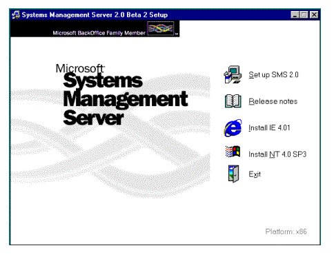
Figure 1. Systems Management Server 2.0 Beta 2 setup
Click Set up SMS 2.0.
When the Welcome screen appears, click Next.
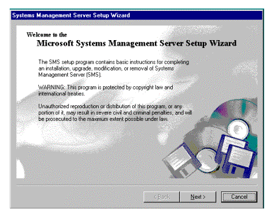
Figure 2. Welcome screen
Setup examines your computer to determine the current system configuration and informs you of any current Systems Management Server installations on the computer. When the System Configuration screen appears, click Next.
When the Setup Options screen appears, select Install an SMS Primary Site, and then click Next.
The Licensing window appears. After reading the license and accepting its terms, Click I agree that: in the licensing dialog box, and then click Continue.
The Installation Options screen appears.
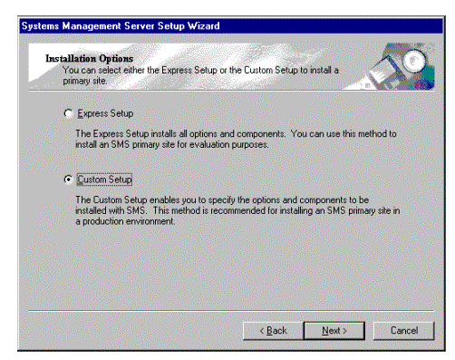
Figure 3. Installation options
Click Express Setup (this is not the default selection), and then click Next. Fill in the boxes in the Product Registration window, and then click Next. You must enter some text (alphanumeric) for the Product ID. For Beta 2 there may not be a sticker with an associated CD-ROM key on the compact disk jewel case; use any numbers.
When the SMS Site Information screen appears, enter the unique three-digit site code and the site name as discussed earlier (the site domain should be left unchanged). Click Next.
The SMS Service Account Information screen appears next.
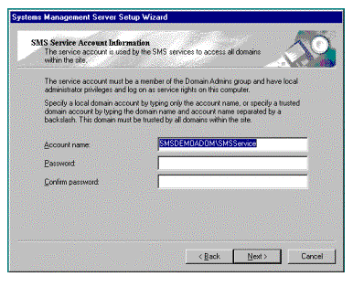
Figure 4. Systems Management Server Account Information screen
Either keep the default, or enter your Service Account name in the first box of this screen. Press your Tab key and enter your password. Press Tab again, re-enter your password, and then click Next.
At the SMS Primary Site Client Load screen, enter the number of client computers that will be managed from this Systems Management Server primary site, and then click Next. This information will be used to size the SQL Server database that is being created automatically.
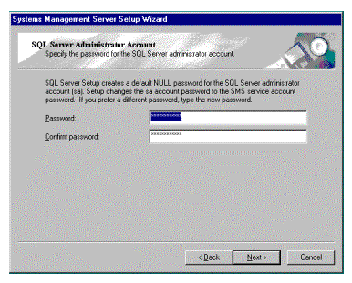
Figure 5. SQL Server Administrator Account Screen
When the SQL Administrator Account screen appears, enter a password for your SA account if you want to assign a different one from your SMS Service account and then click Next.
The Concurrent SMS Administrator Consoles screen now appears. Enter the number of Systems Management Server Administrator consoles you expect to have at your site (usually one) and then click Next.
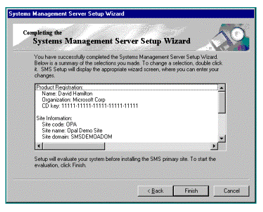
Figure 6. Completing the Setup Wizard
Finally, the Completing the Systems Management Server Setup Wizard appears. Review the choices you made throughout Setup. If you would like to make changes, click Back until you reach the screen that has the information you would like to change. Then, make the change and click Next until you come back to this screen.
When you are satisfied with your responses, click Finish. Systems Management Server will now be installed on your computer.
Your next steps are to configure your site and your hierarchy. Before doing that however, briefly familiarize yourself with the user interface.
The Systems Management Server Administrator console tree is an ordered hierarchical listing of related items and functionality. Each top-level node in the administrator display (directly beneath the Site Database node) represents a different Systems Management Server administrative function. Objects are grouped in a logical manner.
You begin to use the Systems Management Server Administrator by navigating the Systems Management Server Administrator console tree. You navigate by moving from item to item, expanding and collapsing branches as needed to expose the items whose functional scope meets your administrative objectives. The following table describes the top-level nodes in the Systems Management Server Administrator console tree.
| SMS Administrator Console Tree Item | Functional Scope |
| Systems Management Server | This is the root-level node in the Microsoft Management Console. From this point you can connect to a new database if you have more than one Systems Management Server database that is being managed. If you have HealthMon installed it will also be at the root level. |
| Site Database (<name>) | This node is always directly below the Systems Management Server node. In a smaller system there will be only one site database node and all management operations will be accessed from below it. In larger networks an administrator may have more than one site database to manage. At this level you perform database-wide operations such as software metering, network monitoring, and service manager. |
| Reports | From this node in the interface you can generate reports on any collected data. |
| Site Hierarchy | This node allows you to see and manage all the sites in the Systems Management Server hierarchy. This is a key node under which all the site settings are configured for each site. This is where you examine and configure site systems, discovery methods, client installation methods, client agents, addresses, senders, connection accounts, status filtering and summarizing, component configuration, and database maintenance. |
| Collections | This is the node that displays predefined collection information and allows you to create new collections of resources to target with software distribution. |
| Packages | This node allows the creation and modification of packages, and also programs that are subcomponents of packages. A package defines the software that is to be distributed to a particular collection, including the location of the source files and the servers that will be the intermediary distribution points. A package is made up of one or more programs that define the command line that the package uses to install the software on the target system. |
| Advertisements | This is where you create or view an advertisement that has caused a software distribution to happen. |
| Y2K Products | This node reveals the current database of Year 2000 products and their compliance status. |
| Queries | This node allows you to view precanned queries or to create new ones. |
| System Status | This node provides very detailed status information on the site itself, as well as the packages and advertisements. |
| Security Rights | This is where you set up the permissions for each of the administrators. |
When using the Systems Management Server Administrator, you follow this general usage pattern:
The Action Menu
Depending on the currently selected Systems Management Server Administrator console tree item, the Action menu displays choices appropriate to that item. These menu items can be accessed by selecting the item and clicking on Action, or by right-clicking on the item. The following screen shot shows an Action menu for a site system.
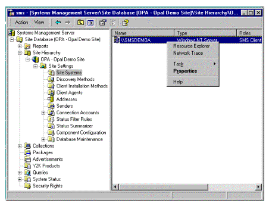
Figure 7. The Action menu
Properties Dialog Boxes
To change the configuration of an item, you change that item's properties. If an item is configurable, you may display its Properties dialog box in any of the following ways:
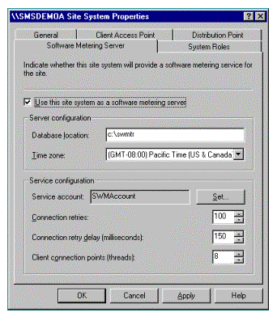
Figure 8. Properties pop-up menu
Filling in the data fields of the dialog box changes the properties of the selected item.
Systems Management Server 2.0 has an extensive, task-based HTML Help system that provides the following:
Spend some time familiarizing yourself with the different action and property options available for the different tasks in the administrator console. Once you are complete, you can tune the product for use and investigate the extensive management information available.
A key requirement from systems administrators has been to provide them with the tools to develop exactly the systems management support they need. To address this issue with Systems Management Server 2,0, we have added extensive configuration information. The default is always sensible, but for the more sophisticated administrator, the ability to fine-tune every component of the system is critical. In this section we will look at the configurable nature of the system, concentrating on Site Settings and Site Status.
When examining these facilities, in most cases we will keep the default settings. However, in some later exercises we will return to this area of the administrator console to change some defaults.
To get to site settings select:
Systems Management Server
Site Database (<name>)
Site Hierarchy
<site name>
Site Settings
The following section describes Systems Management Server 2.0 single-site configuration settings. Please follow each one on your system.
Start by expanding the Site Settings option in the left window, and you will see the following options listed below it:
For each entry you will be able to see a series of configuration categories. For each category you will be able to change the properties of the existing instance of that category or create a new instance of that category.
Site Systems
This node allows the creation and configuration of site systems. A site system is a server, share, or NetWare volume that provides Systems Management Server functionality to the site. Under this node, you can indicate which functions are going to be done by which site systems, therefore allowing the flexibly to distribute the management overhead through a computing environment. For instance, one computer could handle the SQL Server processing, another could drive the software metering facilities, and a third could handle the sender functions. This node also allows analysis of an existing site system, for instance by running a network trace to understand how this system is related to another system in the site. In a test environment it makes the most sense to keep the defaults and leave all the functions on the default site system.
This is also one of the locations from which you can launch the Network Trace feature. This is launched by selecting a particular site system and opening the Action menu. Network Trace is discussed in detail below.
Discovery Methods
This node allows the administrator to define how Systems Management Server discovers resources such as users and machines. For instance, resources could be discovered by user log-ons, or by listening for network activity.
There are six categories available to modify. We will talk more about resource discovery in section 8.3 below.
Client Installation Methods
Once Systems Management Server has discovered a resource, it needs to install the client to drive management operations. This node provides you with the ability to configure this to happen in one of many different ways. This is discussed in detail in section 8.3 below.
Client Agents
Once the agent is installed, there are many operations that it can perform. Not all clients must perform the same operations--an administrator may want to provide software distribution but not remote diagnostics, for instance. The configuration settings for these options are available under this node. We will discuss these settings as we discuss the operations in sections 8.4, 8.5, 8.6, and 8.7 below.
Addresses
Addresses can be configured through this node. They are used to enable sites to communicate via senders. We will keep the defaults in this case, as we are not investigating inter-site communication in these exercises.
Senders
This node provides access to sender creation and configuration. Senders are mechanisms for communicating between sites. In this case we are going to keep the standard sender. In a WAN environment you may want to add RAS or Courier Senders, and modify the working of the standard LAN and WAN senders.
Connection Accounts
Server and client accounts used by Systems Management Server can be created and modified through this node.
Status Filter Rules
This node provides access to configuration information about the way that status messages are to be filtered and forwarded to other sites in the hierarchy. Status is discussed in more detail later in this section.
Status Summarizer
This node provides access to configuration information about the way that status information is to be summarized and stored. Status is discussed in more detail later in this section.
Component Configuration
Some operations, such as metering and software distribution, have component-level configuration settings in addition to client configurations. The component level configurations are set at this node and are discussed when we investigate those functions in sections 8.4 and 8.6 below.
Database Maintenance
Systems Management Server 2.0 greatly extends the database configuration available so that operations need not be performed directly on SQL Server Enterprise Manager. This execution is defined at this node.
Spend some time examining each of these options.
Because Systems Management Server is hosted inside the Microsoft Management Console it is possible to assign certain of these tasks to certain administrators. For instance, if you wanted an administrator to be tasked with managing Systems Management Server itself (rather than using it for distribution, inventory or diagnostics) you can do the following:
Once you have spent some time investigating the flexibility provided through site settings, move on to site status.
To view site status information, select:
Systems Management Server
Site Database (<name>)
System Status
Site Status
Start by selecting your server from the list in the left window (there is probably only one). You will be offered the option of status messages on components or site systems. Investigate both, the output will appear in the right window.
For each of the many Systems Management Server components running on that server, you can see the status of that component, the events that are happening and have happened on your system, and whether they are warnings or errors. This information is invaluable for a systems administrator to understand the status of operations.
Information is provided for the site and for each component. This allows you to see problems not only at the main server, but also at the distribution points as software is distributed, and at the clients as software is installed or other operations are performed. In this way you can follow a process through and be sure that it completes successfully.
Status information can also be filtered and forwarded to other servers in the hierarchy, allowing a summation of the state of the system to be created.
Experiment with the options that are available through the Action menu (by right-clicking the selected server). In particular, click Task and then Network Trace.
You can either access Network Trace as described immediately above, via site status. Or you can select it from:
Systems Management Server
Site Database (<name>)
Site Hierarchy
Site Systems
Select the site system in the right window and launch the Action menu.
By default, this option only discovers information collected through server discovery, so the display may be quite basic. To make it more sophisticated, let's go ahead and configure network discovery, which feeds network trace.
To get to Network Discovery, select:
Systems Management Server
Site Database (<name>)
Site Hierarchy
Discovery Methods
In the Results window, click Network Discovery, and then the Action menu. Click Properties. The Network Discovery Properties dialog box displays General settings for network discovery. Notice that by default, network discovery is enabled, and it is configured to discover topology, clients and client operating systems. However, network discovery will not run until we tell it to do so.
Before we trigger network discovery, investigate the following options:
Click the Subnets tab - Notice that by default, network discovery is configured to discover resources on the local subnet. It will also add discover resources on any subnet that a site system is on. You can also specify additional subnets.
Click the Domains tab - The dialog box displays domain settings for network discovery. Notice that by default, network discovery is configured to discover resources in the local domain of the site server. You can add new domains.
Click the SNMP tab - The dialog box displays SNMP settings for network discovery. Notice that by default, network discovery is configured to discover resources within one hop if using SNMP in the public community. You can increase the hop count or add new community names.
Click the SNMP Devices tab - Notice that by default, network discovery is not configured to discover any devices other than routers or DHCP servers.
Click the DHCP tab - The dialog box displays DHCP settings for network discovery. Notice that by default, network discovery is not configured to discover resources by querying a DHCP server. If you have a DHCP Server and want to use it to provide IP Addresses for discovery, click the New Item button and type in the name or IP Address of your DHCP Server. This is recommended.
Click the Schedule tab - The dialog box displays schedule settings for network discovery. Notice that by default, network discovery is not configured to start. A schedule must be configured for network discovery to complete:
Check back on Network Trace later and you should see a more sophisticated display that includes a trace of your Systems Management Server site and information on the roles of the various site servers (there may only be one in your configuration). The more complicated your environment, the more sophisticated this display will be.
When you check back, investigate the buttons at the top of the display. The three on the right allow you to ping devices, and to poll for the correct functioning of components.
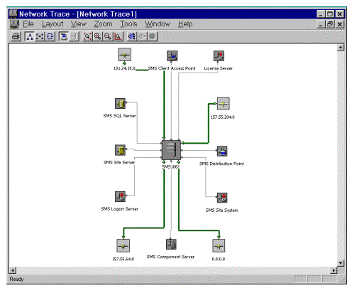
Figure 9. Network Trace of a Systems Management Server site
To manage clients using Systems Management Server requires agent components running on client systems. Version 2.0 has been designed to provide the flexibility to very specifically decide which management facilities should run on each system (you can just do software distribution without doing inventory or metering, for instance).
To get the specific components installed requires:
Systems Management Server 2.0 is not limited to discovering only personal computers. Many new discovery mechanisms are available to allow you to discover a wide range of different types of resources.
In Systems Management Server 2.0, resources include the hardware, Windows NT user groups, and Windows NT user accounts that you can manage with Systems Management Server. Hardware resources include personal computers, servers, and network devices such as routers. Resources are discovered on your network according to their types--different discovery methods are provided for the different resource types.
Systems Management Server discovers all the resources throughout your network; it is not restricted to the site boundaries that you define. The location of each resource is then compared to the site boundaries you have set and the resource is assigned to the appropriate site or sites.
Discovery mechanisms for Systems Management Server 2.0 (Beta 2) include:
Resource discovery methods are enabled, disabled, and configured under Discovery Methods in the Systems Management Server console tree.
To navigate to this node:
Systems Management Server
Site Database (<name>)
Site Hierarchy
Discovery Methods
We are going to use the Windows Networking Logon discovery mechanism in this exercise.
First, before we configure it on the administrator console, let's make sure that we have a client machine to be discovered. Make sure that the client machine you want to manage for the rest of these exercises is correctly configured to allow discovery. (In these exercises we are assuming that the client is a Windows NT Workstation, but it could also be running Windows® 95, Windows 98 or Windows for Workstations.)
Create a user account to be used from the client machine, or verify that there is a user account for this domain already available. This needs to be done first so that the administrator console changes we make are applied to all accounts.
To Create a User Account
Start User Manager for Domains and create a user account with the following parameters.
| Configuration parameter | You should use: |
| Username | <choose a name> |
| Password | <choose a password> |
| User Must Change Password at Next Logon | Click to clear this check box |
| Domain membership | Domain Users |
Once this user is in place, return to the administrator console.
To navigate to this functionality:
Systems Management Server
Site Database (<name>)
Site Hierarchy
Client Installation Methods
Systems Management Server client software can be installed by any of the following installation methods:
Windows networking logon client installation - When a computer within the site boundaries logs on to the Windows-based network, Systems Management Server installs the client software on that computer.
Windows NT remote client installation - Systems Management Server client software is automatically installed on Windows NT-based computers within the site boundaries. The Windows NT-based computers need to be turned on and connected to the network. It is not necessary for anyone to be logged on to these computers.
Manual Windows networking network connection client installation - The user must explicitly connect to a file on a Windows NT logon point to install the Systems Management Server client software. This method provides for those cases where no logon script is used.
NetWare Bindery server logon client installation - When a computer logs on to a NetWare bindery server, Systems Management Server installs the client software on that computer.
NetWare NDS logon client installation - When a computer within the site boundaries logs on to the NetWare NDS context, Systems Management Server installs the client software on that computer.
Manual NetWare NDS network connection client installation - The user must explicitly connect to a file on a NetWare NDS logon point to install Systems Management Server client software.
Manual NetWare Bindery connection client installation - The user must explicitly connect to a file on a NetWare Bindery logon server to install Systems Management Server client software.
You can use more than one installation method.
We are using the Windows networking logon client installation mechanism in this exercise. Because we have already defined the logon script in the discovery process, there is nothing further for us to do. Other client setup methods require further configuration at this level.
In the following procedure, we will verify that the account that was created earlier is ready to be used:
In this exercise, we will add your client computer to your Systems Management Server site:
To navigate to this functionality:
Systems Management Server
Site Database (<name>)
Collections
All Systems
One of the key features of Systems Management Server is to distribute and install software. Systems Management Server has the flexibility to distribute a software package to a collection that can contain machines, users, and user groups. A collection can contain a subset of one of these resources based on inventory information collected (for instance, all machines that have more that 16 MB of RAM).
There are a number of components to distributing software:
In this exercise we are going to outline the procedure for rolling out Service Pack 3 of Windows NT 4.0 to a Windows NT Workstation that is running Windows NT 4.0 and is in our local subnet. Therefore, the ideal client to have is a Windows NT Workstation. However, if you have a Windows 95-based client you may be able to make substitutions as you move through the exercise.
In this exercise, we will create a collection that will be used as the target to advertise a software program. This collection will be dynamically created as a result of a query that checks to see which machines are currently running Windows NT 4.0 and are in the local subnetwork.
Navigate to the Queries node:
Systems Management Server
Site Database (<name>)
Query
| Attribute Class | Attribute |
| System Resource | IPSubnets |
| Operating System | Name |
In the following procedure, you will create the criteria to be used to determine all Windows NT Workstation 4.0 computers on the local subnet:
In the following procedure, we will test the query to verify it works successfully before creating the collection:
Navigate to the Collections node:
Systems Management Server
Site Database (<name>)
Collections
In the following procedure, we will configure the software distribution agent. We do not have to do this, but it makes the user experience more pleasant.
Navigate to the Client Agents node:
Systems Management Server
Site Database (<name>)
Site Hierarchy
Site Settings
Client Agents
In this exercise, we will create a package and program to be advertised to all computers that are part of the collection. Then we will assign distribution points for the package, and create the advertisement for the package. This will all be accomplished using the Distribute Software Wizard.
Navigate to the Software Distribution Wizard:
Systems Management Server
Site Database (<name>)
Collections
Local Windows NT 4.0 Clients
Before we move to the client machine, let's verify the advertised program is available by viewing the advertisement status in the SMS Administrator console. This is possible due to the new status engine that Systems Management Server provides.
Navigate to the Advertisement Status:
Systems Management Server
Site Database (<name>)
System Status
Advertisement Status
In this exercise, we will install the software distribution components on the client computer.
One of the key features that Systems Management Server 2.0 offers is the ability to work in elevated privilege. A user without administrative privileges on their workstation would not be able to install Service Pack 3, but that should not stop a successful deployment from happening. So, first we are going to try and run the program directly as a user, and then we are going to distribute it to the user through Systems Management Server. The first will fail; the second will succeed.
Run the Program Directly
So we cannot run it directly. However, when Systems Management Server encounters this problem it automatically switches over to running at an elevated privilege level.
Running the Program from Systems Management Server
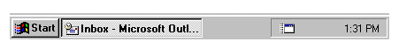
Figure 10. Advertised Programs icon
For more information on the different mechanisms available for installing software please read the material associated with the Systems Management Server Installer. This add-on, which was released last summer, is also included with the Systems Management Server 2.0 CD-ROM. Full details on use of the Systems Management Server Installer can be found at http://www.microsoft.com/backoffice/downloads/moreinfo/smsinst.asp  .
.
Hardware inventory adds complete details of the hardware detected on each client in the site database. Hardware inventory is enabled by default. Please note that for Beta 2 there is a 15-minute delay after the installation of the hardware inventory agent before inventory is collected.
In the following procedure, we will view the client inventory using Systems Management Server Administrator.
Navigate to the hardware inventory information:
Systems Management Server
Site Database (<name>)
Collections
All Systems
Notice the very detailed information that is being returned from the Common Information Model.
Software inventory is enabled by default. When you configure software inventory for a site, you can specify what file types to inventory and how often the inventory is to be performed. Please note that for Beta 2 there is a 30-minute delay after the installation of the software inventory agent before inventory is collected.
In the following procedure, we will view the client inventory using Systems Management Server Administrator:
Navigate to the software inventory information:
Systems Management Server
Site Database (<name>)
Collections
All Systems
Under Unknown Files you will get a list of products that do not define a header, we are still able to get basic information on them for an administrator to use. We didn't choose to collect any files, but we easily could have done so.
Beta 2 has added tools to check for Year 2000 compliance, based on the software inventory information. These tools will be improved before the product is released.
Perform the following steps to investigate this functionality:
Firstly, navigate to the Year 2000 database:
Systems Management Server
Site Database (<name>)
Y2K Database
Here you will find a list of compliance levels for Microsoft products. This list is current as of Beta 2. You can update this list, add compliance information from other vendors, or add compliance checking for European compliance by doing the following:
Systems Management Server
Site Database (<name>)
Queries
Y2K Non Compliant Software on Systems by Version
Software metering is a new feature in Systems Management Server 2.0. It gives administrators the ability to monitor and prevent application use dependent on their criteria, or to track application use for charge-back purposes.
In this exercise, we will configure the software metering component for Systems Management Server 2.0. The first thing we need to do is define which of our servers is going to be the software metering server:
Navigate to the site server:
Systems Management Server
Site Database (<name>)
Site Hierarchy
Site Systems
We will need to wait for up to 30 minutes before this takes effect. While waiting we can modify the software metering configuration for the site:
Navigate to the component configuration:
Systems Management Server
Site Database (<name>)
Site Hierarchy
Component Configuration
Navigate to the component configuration:
Systems Management Server
Site Database (<name>)
Site Hierarchy
Client Agents
Now let's indicate what we want to meter:
Navigate to software metering:
Systems Management Server
Site Database (<name>)
| In this box | Type or select |
| Product name | Notepad |
| Serial number | Blank |
| Purchase date | Default |
| Number of licenses | 1 |
| Enforce license limits for product
Program Name |
Click to select
Notepad.exe (browse to get the app) |
By default, licenses added at a site are not balanced to a server for seven days to allow monitoring of applications to do trend analysis. At the end of this trend analysis period, licenses are balanced to the software metering servers that need them. However, we disabled the trend analysis for Notepad by canceling "Do not enforce the license limits for this product until a trend has been calculated." With this canceled the server will do license balancing but only after a request has been made for a license. So, to force this balancing, we need to run Notepad on the client and receive a denial.
Now that a denial has occurred, license balancing can take place. However, it is on a 15-minute schedule, so wait 15 minutes before continuing.
Now that everything is finally ready, let's have a look at how metering is able to control application use on the client computer:
Software metering also has the ability to control software use based on time of day. For instance, a corporation may want to disable the playing of games during business hours. Experiment with this facility in metering by double-clicking a licensed application (such as Notepad) under the Defining Metered Software window, and then selecting the Permissions tab. Also observe the other configuration options available under Permissions, Alerts, and Rules.
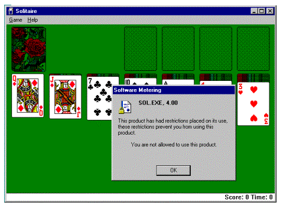
Figure 11. Permissions for software use are set through software metering
Charge-back is another powerful feature of software metering. Not only is this tool able to monitor application use, it also monitors the length of time applications are used for. This data is then available for an IS department to use to charge other departments for use of developed or deployed applications, or use of services such as the Internet. Experiment with this facility by examining the Duration column in the Software Metering Summary window.
Investigate the graphing and reporting wizards that are new features in Beta 2.
The remote diagnostics tools in Systems Management Server 2.0 are faster and more robust that in previous versions. Their configuration is also more granular, especially from a security context. Also, in Beta 2 a new server health monitoring feature has been added, called HealthMon.
HealthMon is at preview quality in Beta 2, and should not be used in production environments.
The following exercises will examine HealthMon and remote control.
HealthMon is intended to be an example of the power of the WBEM infrastructure underlying Systems Management Server 2.0. It is written to use information populated by using the performance monitor provider for CIM. It is at preview quality only for Beta 2. To investigate the potential the infrastructure provides to create such a tool, please complete the following:
Install the HealthMon Console:
Install the HealthMon Agent:
Install the HealthMon Snap-in:
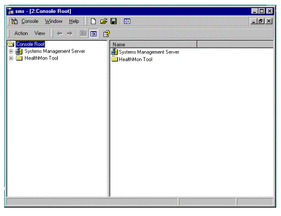
Figure 12. Installing the HealthMon snap-in
Now we have set up HealthMon, we can use it to monitor the Server.
Manage a Server with HealthMon:
Navigate to the managed server:
HealthMon Tool
Managed Systems
<server name>
All Objects
Monitoring of BackOffice services is not supported in the Beta 2 release of Systems Management Server.
One action we did not perform with HealthMon was distributing the agent. We chose simply to install it manually. In an enterprise environment we would use Systems Management Server to distribute this agent. To enable this process there is a package available for HealthMon that can be distributed through the software distribution wizard. Feel free to investigate this functionality.
In this exercise, we will configure the remote control component for Systems Management Server 2.0:
Navigate to the remote control client agent:
Systems Management Server
Site Database (<name>)
Site Hierarchy
Client Agents
Note that we configured the remote control settings such that the user could not change them, but would be asked for permission before a remote control session started.
In this exercise, we will take over the screen and keyboard on the client machine:
Navigate to the client machine:
Systems Management Server
Site Database (<name>)
Collections
All Systems
When the client is running Remote Control Agent, this thumbnail image appears on the user's desktop:
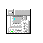
Figure 13. Thumbnail image of Remote Control Agent
When no Remote Control session is taking place, the window title bar is gray. The user is alerted to an active Remote Control session when the title bar turns red.
Double-clicking the face of this window will display the following Remote Control Status dialog box for Windows NT users:
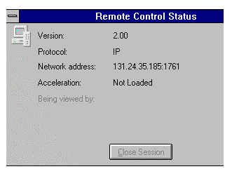
Figure 14. Remote Control Status dialog box
Users running Windows 95 will view the following dialog box:
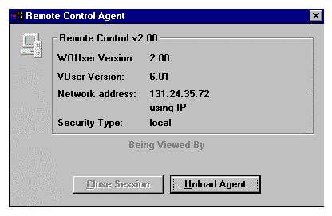
Figure 15. Remote Control Status dialog box for Windows 95
Right-clicking the thumbnail image of the window displays a Pop-Up menu.
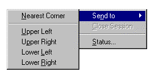
Figure 16. Thumbnail image's pop-up menu
Users may reposition the thumbnail image of the agent window, or may view the status of Remote Control sessions on their computer. From the Remote Control Status dialog, pressing Close Session ends the session immediately. Pressing Unload Agent prevents any Remote Control operation until the agent is reloaded.
There are also many other remote management tools available in this Beta, including remote reboot, remote chat, and remote launching of administrative tools. Experiment with these from within the Remote Tools window.
One tool that is particularly interesting in the way that it has changed since version 1.2 is the network-monitoring tool. This tool has added a series of monitors and experts that can evaluate the captured information and therefore lessen the work an administrator needs to do to research a problem. Monitors available include the Rogue DHCP Address Monitor and the IP Range Monitor -- which can help you find problem systems before they cause outage, whether intentionally or not. To navigate to Network Monitor:
Systems Management Server
Site Database (<name>)
For the latest information on Systems Management Server, check out our World Wide Web site at http://www.microsoft.com/smsmgmt  .
.
| Server Hardware requirements | 120 MHz Pentium processor
64 MB of RAM minimum (128 MB recommended) 500 MB of free disk space on an NTFS partition and 100 MB on the system drive Access to any CD-ROM drive supported by Windows NT Server 3.51 or higher |
| Server Software Requirements | Fresh install (recommended) of Windows NT version 4.0, Service Pack 3
Internet Explorer 4.01 Systems Management Server 2.0 (Beta 2) CD-ROM contains: Microsoft Internet Explorer 4.01 Windows NT version 4.0, Service Pack 3 SQL Server 6.5 SQL Server 6.5, Service Pack 3 Microsoft Management Console Systems Management Server 2.0 |
| Server Role | Windows NT Primary/Backup Domain Controller
Windows NT Member Server (must be a member of a domain) |
| Clients Supported* | Windows NT 3.51 and 4.0
Windows 95 and Windows 98 Windows 3.1 Windows for Workgroups 3.11 |
| Network Operating Systems Supported* | Windows NT Server
LAN Manager Novell Netware 3.x Bindery Novell 4.x Netware Directory Services |
*Please note the following additional client restrictions that are specific to Beta 2:
Did you find this material useful? Gripes? Compliments? Suggestions for other articles? Write us!
© 1999 Microsoft Corporation. All rights reserved. Terms of use.